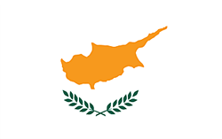
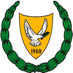

Republic of Cyprus Flag and other Flags in Cyprus
The Republic of Cyprus flag

The Republic of Cyprus flag The national flag of Republic of Cyprus was adopted in 1960 after gaining independence from the United Kingdom. The flag was chosen by the President of the Republic Makarios III and the Vice-President Fazil Kucuk as the result of the flag design competition. According to the Constitution, the flag should not have blue or red colours (the colours of the flags of Greece and Turkey) and should not feature a cross or a crescent. The flag should look neutral. The national flag design competition was won by a Turkish Cypriot teacher and artist Ismet Guney. Cyprus flag is uniqueCyprus is the only country to display its land area on its official flag. The background of the flag is white that represents peace. In the middle, there is the map of the island that has the copper colour to represent the historical attachment of Cyprus to this metal. Under the island's map there are olive tree's branches. The branches of the olive tree represent peace as well. The flag of Cyprus is used on land as the national and civil flag and at sea as the national and civil ensign. Many sea vessels in the world go under the Cyprus flag as Cyprus has the third largest fleet within the European Union, with 16% of the total fleet of the 25 EU Member States. The European fleet capacity has increased upon Cyprus' accession due to the Cyprus fleet contribution. The colors of the Republic of Cyprus flagThe International code numbers of the colors of the flag of the Republic of Cyprus (PANTONE MATCHING SYSTEM (PMS) are:
Republic of Cyprus constitution about the Cyprus flagArticle 4 of the Constitution of the Republic of Cyprus that was adopted on August, 16 1960 refers to the national flag:
Before the national flag of the Republic of Cyprus was introduced the flags of Greece and Turkey were used. Cyprus National Emblem

Cyprus Emblem Except the national flag, Cyprus has an emblem. It features the crest of green olive tree leaves that surround the shield. The shield is golden like copper, which is associated with Cyprus. Inside the shield there is a white pigeon that keeps the olive tree's branch in its mouth. Also on the shield there is the year 1960 - the date of Cyprus independence �written in black. The olive tree's branch and the pigeon symbolize peace. Republic of Cyprus flag in the news
Useful links: Cyprus Forum, Events in Cyprus, Cyprus Weather and Cyprus Radio Print Page |